Fig. 7.1 l
Media and
Social Reflections
7
Unit
Observe Figure 7.1
The various devices used for communication are given in the picture above.
Humans have been using various methods of communication since ancient times.
Mass media refers to different forms of communication that can simultaneously
reach many people. These include newspapers, magazines, radio, television, the
Internet and social media.
Internet
Page 103


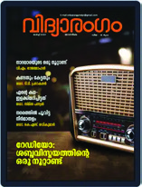

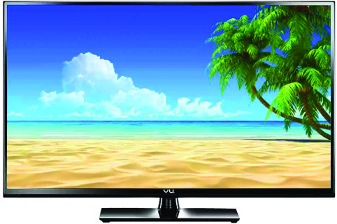
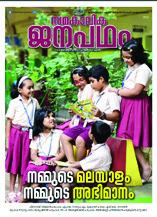
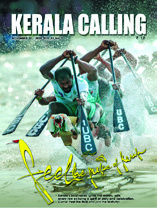
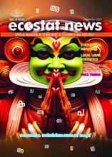
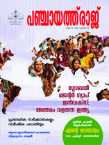

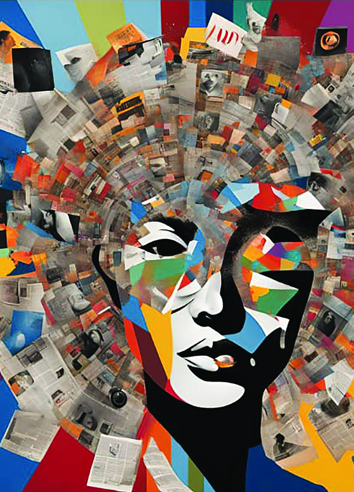
Page 104

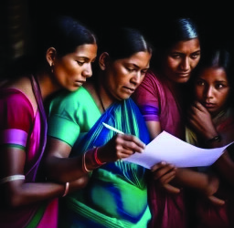
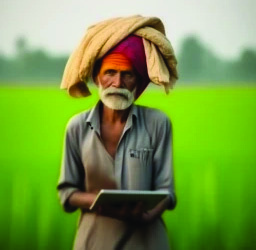
104
Social Science
Standard
Print media
Radio
Television
Internet
l news
l articles
l
l
l announcements
l weather forecast
l
l
l entertainment
programmes
l cinema
l
l
l online news
l e-commerce
l
l
Fig. 7.4 l Printing press
Fig. 7.3 l
Fig. 7.2 l
Complete the list indicating what is included in different media for
communication.
Media play an important role in developing reading and
writing skills in individuals. Individuals come into contact
with written language through newspapers, magazines,
blogs, and social media. This encourages reading. Interactive
platforms like social media, blogs, and online forums allow
individuals to reflect and share their thoughts. Media,
libraries, book clubs, and online writing communities foster
reading, writing, and culture. The mass media accelerate
social progress by bringing various literacy programmes to
the masses and by creating awareness among them. The
advancement of technology has led to the evolution from
print media to digital media.
Different Forms of Media
Media are an important means of communication for
shaping social relations and ensuring interaction between
individuals and society. These are means of communication
through which individuals, groups and institutions interact
in social life. Media can be classified in many ways based on
usage.
1. Print Media
Do you read the publications in the school library?
Which publications do you like the most?
l
l
Page 105

105
Media and
Social Reflections
Prepare a letter to the editor on any news or article published in
periodicals, indicating your evaluation and opinion, and present it in
the class.
The relevance of print media, like newspapers, magazines,
and books, is also significant in the digital age. These provide
comprehensive news, features, and literary works to the
community. A reliable and immensive reading experience
is available through print media. These can be stored for
future re-reading. In this context, communication is only
possible from print media to readers.
Figure 7.5 shows the broadcasting of programmes by
broadcast media. Broadcast media, such as radio and
television, convey ideas to a large number of people
simultaneously. In this case, communication is possible
only in one direction. The possibility of interaction is also
limited here due to the delay in recording feedback on
broadcast programmes.
News, music, discussions, debates, and sports are available
through broadcast media. Although digital platforms are
evolving, broadcast media influences a large segment of the
population and shapes public opinion.
2. Broadcast Media
Fig. 7.5 l
Broadcasting
Station
Uploads
Data
Downloads
Data
Transmitter/
Receiver
The Satellite
DTH
Receiver
Watching TV
Page 106


106
Social Science
Standard
How do you convey your opinions about radio and television
programmes to the broadcasters?
l through letters
l
l
3. Digital Media
Fig. 7.6 l
Here are the images of the home pages of the State Council
of Educational Research and Training (SCERT) and Samagra
Portal. Do you use the ‘Samagra’ portal? What are its
features?
l
l
How does it support your learning activities?
l
l
With the advent of the Internet, many revolutionary changes
took place, and digital platforms came into existence.
Websites, online news, and blogs started bringing live
reports to the masses. This has led to an increase in social
interaction through media. It has provided an opportunity
to share and discuss the content of information.
Do you observe educational blogs? What is the most important
educational website you have visited recently? What factors influenced
you on those websites? Discuss these in class.
Page 107
107
Media and
Social Reflections
Fig. 7.7 l
5.00 pm
5.03 pm
5.05 pm
5.16 pm
4. Social Media
Have you noticed the Class Teacher informing the students
about the online seminar through social media and the
students responding to it?
What kind of support do social media provide for your
learning needs?
l sharing learning resources
l
l
Social media have become an integral part of the lives of
modern people. Interpersonal relationships and social
interactions are more common on social media. Social
media are online platforms that allow consumers to create,
share, and interact with content such as text, images, and
videos. Through various forms of communication, such
as direct messaging, feedback, and general sharing, social
relationships and social gatherings are facilitated. Social
media play an important role in shaping public opinion,
Dear Students,
There will be an online seminar on the topic ‘Media and Social Life’
at 7 p.m. today. Everyone should attend on time.
Varnakkoodaram
Ok, Teacher
I will not be there... Teacher
Page 108


108
Social Science
Standard
promoting social interaction, and influencing cultural and
political movements.
Prepare a poster showing the evolution of media development and
present it in the Social Science Club.
Print media and broadcast media are traditional forms of
media. Interaction is limited through these since it is a one-
way communication. On the other hand, digital media and
social media come under the category of new media. These
facilitate smooth two-way interaction.
Put the strips in a box with the names of different forms of media
(newspaper, magazine, radio, television, website, social media) written
on them. Divide the class into different groups. Each group shall select a
medium from the list. Find out how the following hints are presented in
each medium.
l local/national/international news
l advertisements
l entertainment
l sports
l knowledge
l arts
Find out how the audience reacts in each medium and present your
findings in the class.
Traditional Media
New Media
l Digital media
websites, online news
papers, blogs, etc.
l Social media
photo-video sharing
platforms, online discussion
forums, etc.
Different Forms of Media
l Print media
newspapers, books, etc.
l Broadcast media
radio, television, etc.
Page 109
109
Media and
Social Reflections
Based on the findings from the activity, let us examine how
traditional media and new media differ.
Find more differences and add them to the table.
Features
Traditional Media
New media
communication
one-way communication
(from sender to the receiver only)
two-way communication
(between communicators
and receivers)
interaction
interaction is limited
high interaction and
participation
form
physical form
(newspaper, radio, television)
digital form (internet-
enabled devices)
recipients
limited participation
creative participation
availability
not always available due to time
and location limitations
available internationally
without limitation of time
and location
l
l
l
l
l
l
Media play an important role in shaping society by
influencing public opinion, social norms, and cultural values.
Traditional media such as newspapers, radio and television
provide entertainment, communication and knowledge.
Meanwhile, new media enable greater communication and
increased participation.
Social media interaction has a positive impact on
interpersonal
relationships.
However,
according
to
sociologists, such interactions have a negative impact
on society. Although social media facilitate short-term
interactions, they fail to engage in meaningful and sustained
relationships.
Page 110

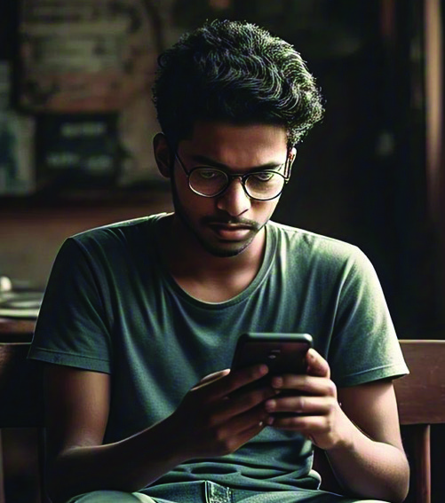
110
Social Science
Standard
Prepare and present in class a collage indicating the characteristics of
traditional and new media.
Fig. 7.8 l
Find and add more problems that excessive use of social
media creates.
l it adversely affects students’ learning and their
physical and mental health.
l the excessive use of media creates distance in
personal and social relationships.
l
l
Impact of Media on Social Life
Both traditional and new media have become an integral
part of modern society. Let us examine how different forms
of media influence our social lives.
1. Media & Socialisation
Which is the children's publication that you like?
What knowledge have you gained from it?
l stories
l values
l moral lessons
l
l
l
Do we gain social values, moral lessons, knowledge, and
entertainment through stories and poems? Socialisation is
the process of learning from our environment how to live
and behave in society from childhood. For example, when
we are children, we learn from our parents the value of
respecting elders.
Family, school, friends, and media help in socialisation. Media
exert their influence on how we must intervene in society,
what we should desire and in personality development.
Social values and attitudes which are transmitted from one
Page 111

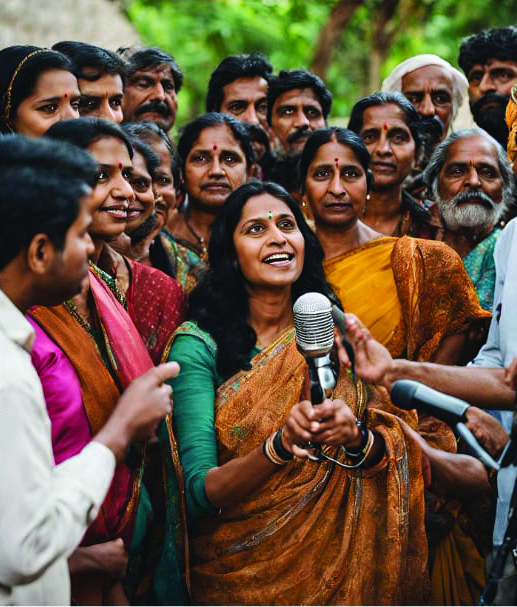
111
Media and
Social Reflections
generation to the other are transmitted through media as
well.
Find out how programmes on the Kite Victers Education Channel
support your character development and social knowledge-building and
present your observation notes in class.
2. Media and Public Opinion Formation
Kerala Law Reform Commission invites
suggestions and comments
The government has asked the
Kerala Law Reform Commission to
study in detail the preparation of the
rank list of candidates by the Kerala
Public
Service
Commission
and
submit a report on it. In this regard,
suggestions
and
comments
are
solicited from the public. The public
hearing will be held in the Conference
Hall of Government Guest House,
Thycaud Thiruvananthapuram on
September 1, 2022, at 10.30 a.m.
Everyone can attend the hearing on
that day and submit their suggestions
and comments in person or by post
to The Secretary, Kerala Law Reform
Commission, TC No. 25/2450, 3rd
Floor, CSI building, Puthenchanda,
Thiruvananthapuram 695001.
Fig. 7.9 l
Opinion formation
Did you read the news provided? In a democracy, the
government considers public opinion before formulating
new policies. The public is asked to submit suggestions
through various media.
Public opinion is formed through the media during elections
and foreign policy deliberations. In this way, the media act
as an important tool in forming public opinion and gaining
consensus.
Programmes in some media tend to be biased and reactionary.
Have you noticed that inaccurate and unclear ideas are
propagated through new media? The growth of social media
has fuelled these trends. An example of this is that during
the spread of Covid-19, fake treatments and myths related
to the virus were circulated on some social media platforms.
Page 112


112
Social Science
Standard
Fig. 7.10 l
Cybercrimes are crimes
committed using or
targeting information
and communication
technologies.
Computers, mobile
phones, and digital
cameras are the
devices used for this.
The Information
Technology Act 2000
is an Act passed by the
Parliament to ensure
strict legal action and
punishment for those
involved in cyber crimes.
Information
Technology
Act 2000
(IT Act 2000)
This leads to the false formation of public opinion.
Creating and spreading such false news is punishable
under the Information Technology Act (IT Act 2000).
Digital tools such as social media, websites, and online
campaigns are also used to bring social, political, or
environmental issues to the public. Have you noticed
an increase in this type of activity on social media?
Do you participate in it?
Social media platforms fuel public interventions
by
enabling
avenues
for
communication
and
instant resource mobilisation. Various hashtag (#)
campaigns on social media, awareness programmes
and fundraising are some examples.
Discuss in the class what can be done to
identify misperceptions and misinformation
in the media, and record them on the chart.
3. Media and Consumption Behaviour
Why do such advertisements in the image appeal to the
public?
l
l
Do the media influence your eating habits?
Page 113


113
Media and
Social Reflections
The media are a storehouse of food advertisements
and cookery shows. Advertisements related to many
such fields can be seen in the media. The media fuel the
growth of the global economy by advertising, announcing
job
opportunities,
and
increasing
consumerism.
Advertisements and other programmes through the media
are influential in shaping our consumption behaviour.
Collect pictures of food advertisements in newspapers and magazines.
Make a news collage discussing what changes they have made in your
healthy eating habits.
4. Media and Stereotypes
Note the preconceived notions, attitudes and beliefs that
still exist in some parts of society.
Men are the breadwinners and
protectors of the family
Low income earners
are uneducated
Employed women are trendsetters and
neglect family responsibilities
Fairness creams should be
used to enhance beauty
Women’s place is in the
kitchen and they are supposed
to take care of the family
What preconceptions are listed here?
l
l
l
l
l
l
Are they factually correct?
Stereotypes
are
statements
with
generalised
preconceptions. Stereotypes are simple, generalised
beliefs or ideas about individuals based on race, gender,
culture, colour, and the like.
Have you noticed that these stereotypes are reflected in
different forms in the media?
Page 114


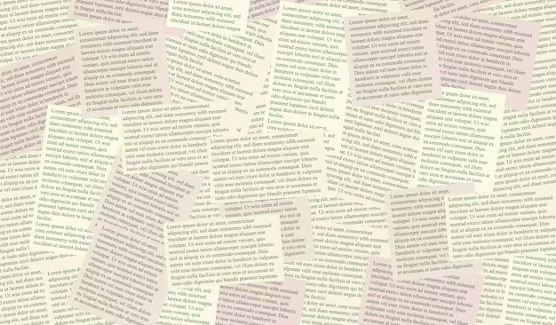
114
Social Science
Standard
Observe various media events and prepare a digital album/digital
collage illustrating the role of media in forming and maintaining
stereotypes and present it in the class.
Rain continues: Kerala on
alert as water levels rise
Global poverty rates rise amid
economic downturns and crises
UN calls for urgent action
to fight pollution and
climate change
save our village
for social justice
sustainable future
against discrimination
In what media programmes are these reflected?
l serials
l advertisements
l movies
l
l
l
Various forms of media such as films, news, and social media
shape and reflect social attitudes. The media influence public
opinion and reinforce social norms. Through this,they play
an important role in forming and maintaining stereotypes.
5. Media and Social Interventions
Observe news headlines and hashtag phrases
What are the social problems reflected here?
l
l
l
l
l
l
Kerala government
announces rehabilitation
and financial assistance for
survivors of Churalmala
and Mundakai landslides
Page 115

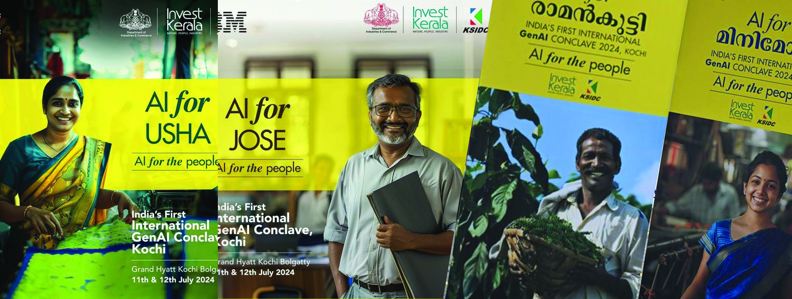
115
Media and
Social Reflections
Prepare a news report on a social issue in your area and present it in
the class. Discuss various solutions to solve the problem in the class.
The government re-invents the advertisement model
Kochi: These are the advertisements
placed for the International Gen A.I.
summit held at Kochi. The advertising
models are created with the help of
artificial intelligence (AI). The four
AI models include Ushachechi the
tailor, Josettan, a common man
who needs government services,
Ramankutty, the farmer, and Minimol,
the entrepreneur.The models in this
advertisement are created by AI.
Fig. 7.11 l
It can be seen that the media are involved in bringing various
social problems to the public and speeding up the steps to
solve them through various levels.
Media and Technology
Read the news:
What changes has artificial intelligence created in society?
Have you prepared a wall chart indicating the progress of the media? Have
you noticed that technology fuelled the growth of media? Technology and
media are intertwined. Advances in technology have given rise to new forms
of media. Developments in this field have led to the emergence of new media
such as social media platforms, online news portals, and streaming services.
This has led to major changes in the production, distribution and consumption
of information. Technology increases the accessibility of media. It also
enhances global communication by creating opportunities to engage with
Page 116


116
Social Science
Standard
content anytime, anywhere. Innovations such as artificial
intelligence, big data and algorithms are the driving forces
of our personal and societal development.
Digital Etiquette
Collect information from various media and prepare a digital
report with the help of your teacher on the topic ‘Impact of Artificial
Intelligence in Social Life.’
Legal action will be taken
against those who defame
others by giving false news
A case has been filed against the media for giving fake news
Artificial Intelligence
Artificial intelligence equips machines to think and make decisions
like humans. It refers to the simulation of human intelligence by
computer systems. It helps in performing tasks like learning,
decision-making, and problem-solving.
Big Data
Big Data refers to large data sets that are too complex and cannot be
handled by conventional data processing software.
Algorithms
Algorithms are step-by-step procedures or formulas for solving
a problem. In the context of artificial intelligence and big data,
algorithms are used to analyse data, identify patterns, and make
predictions. For example, search engines and machine learning
models rely on algorithms to function.
Cyber cell arrested 50
people for spreading
fake news.
Page 117
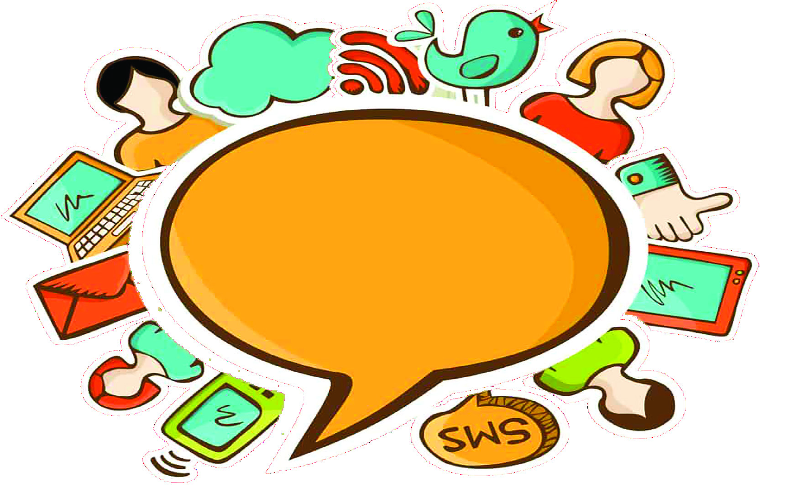
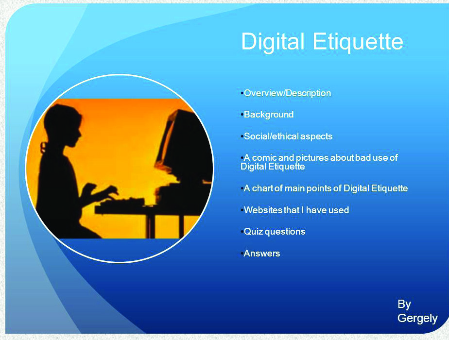
117
Media and
Social Reflections
News related to some false information that comes in the
digital media is given here. Irresponsible use of digital
media creates conditions for fraud, defamation, crimes, and
dangers. Aren't you using digital platforms? What are the
things to be aware of while using them?
Digital Etiquette refers to the proper and respectful behaviour that
individuals are expected to follow while interacting in digital spaces.
Digital etiquette includes guidelines for communication.
What are they? Can you add more suggestions?
l respect others’ privacy
l avoid abusive language
l be careful of the messages in
digital spaces
l be careful when sharing posts
l
l
q respectful communication is possible
q provides clarity and understanding in communication
q forming positive online communities
q cyber crimes decrease
q leading society towards safer digital spaces
q supports digital literacy
q
Digital etiquette promotes positive and effective online
interaction. These should be accepted as social norms.
What are the benefits we gain by practising digital etiquette?
Page 118


118
Social Science
Standard
Prepare a poster on digital etiquette and display it in your school.
l Organise a seminar on ‘Media and Social Life.’
l Prepare a speech on ‘The Impact of New Media in the Formation of Public
Opinion.’
l Organise a panel discussion of media experts.
l Visit the office of All India Radio or Doordarshan or a daily newspaper either
in person or through virtual reality and prepare an observation note on the
activities there.
Extended Activities
Media Literacy and Digital Literacy
Media literacy is the ability to access, analyse, evaluate, create, and
communicate messages received through various forms of media.
It involves understanding how media content is produced, how it
shapes our perceptions, and helps critically interpret messages.
Digital literacy is the ability to find and evaluate information in
digital spaces and use digital tools and technologies effectively.
These include basic computer skills, understanding how to use the
internet, navigating digital platforms, critically evaluating online
content, and cyber awareness.
The influence of media can be seen in our communication,
access to information, and the way we understand the
world. Media are a crucial element of interaction between
individuals and society. The influence of media can be
seen in the formation of public opinion, formation of
social behaviour, and formation of social norms. With the
advancement in technology, especially with the advent of
artificial intelligence, the growth of the media has been
increasing and, they have become a reflection of social
change.
Page 119
CONSTITUTION OF INDIA
Part IV A
FUNDAMENTAL DUTIES OF CITIZENS
ARTICLE 51 A
Fundamental Duties- It shall be the duty of every citizen of India:
(a) to abide by the Constitution and respect its ideals and institutions,
the National Flag and the National Anthem;
(b) to cherish and follow the noble ideals which inspired our national struggle
for freedom;
(c) to uphold and protect the sovereignty, unity and integrity of India;
(d) to defend the country and render national service when called upon to do so;
(e) to promote harmony and the spirit of common brotherhood amongst all the
people of India transcending religious, linguistic and regional or sectional
diversities; to renounce practices derogatory to the dignity of women;
(f)
to value and preserve the rich heritage of our composite culture;
(g) to protect and improve the natural environment including forests, lakes, rivers,
wild life and to have compassion for living creatures;
(h) to develop the scientific temper, humanism and the spirit of inquiry and reform;
(i)
to safeguard public property and to abjure violence;
(j)
to strive towards excellence in all spheres of individual and collective activity
so that the nation constantly rises to higher levels of endeavour and
achievements;
(k) who is a parent or guardian to provide opportunities for education to his child or,
as the case may be, ward between age of six and fourteen years.
Page 120